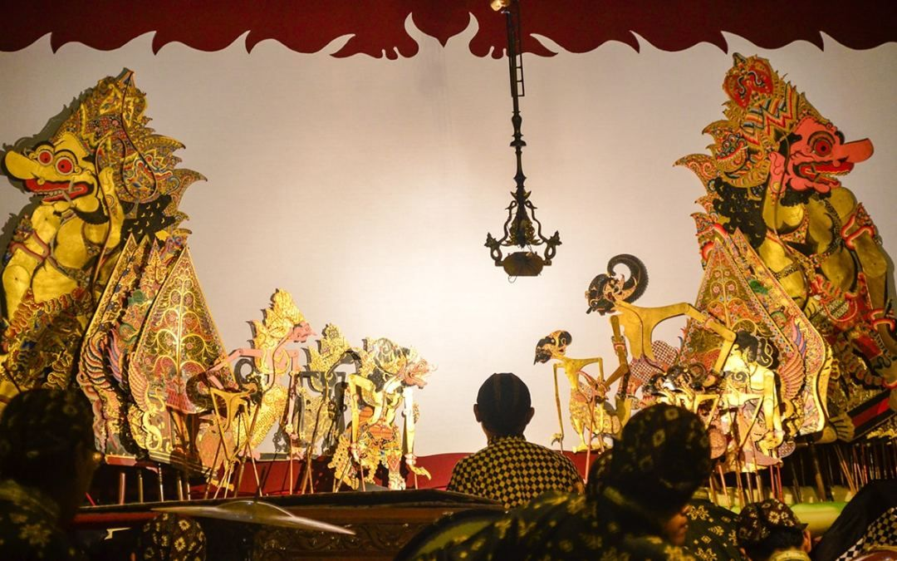
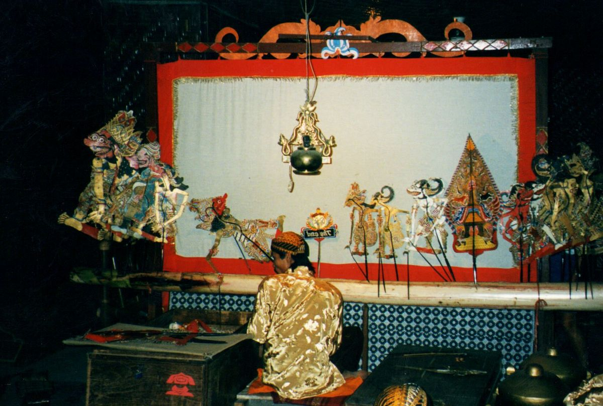

1. Seni Pertunjukan Teater Bayangan
Wayang Kulit adalah seni teater bayangan tradisional yang berkembang pesat di pulau Jawa dan Bali. Pertunjukan ini dimainkan oleh seorang **Dalang** yang mengendalikan narasi cerita, dialog tokoh, sekaligus mengiringi ketukan musik. Menggunakan media layar kain putih (*Kelir*) dan pencahayaan lampu minyak (*Blencong*), penonton menikmati keindahan pertunjukan ini dari sorotan bayangan boneka kulit yang bergerak dinamis.

2. Mahakarya Seni Tatah Sungging
Keindahan fisik Wayang Kulit terletak pada kerumitan pembuatannya yang menggunakan bahan kulit kerbau asli. Proses memahat kulit (*menatah*) dan mewarnai (*menyungging*) membutuhkan ketelitian tingkat tinggi agar menghasilkan karakter tokoh yang detail dan estetis. Cerita yang dibawakan biasanya bersumber dari epik kuno seperti Ramayana dan Mahabarata, namun selalu disisipkan nilai-nilai filosofi hidup, kritik sosial, serta banyolan jenaka lewat tokoh Punokawan.
Pengakuan Dunia
Wayang Kulit telah ditetapkan oleh UNESCO sebagai Masterpiece of Oral and Intangible Heritage of Humanity. Seni tradisi ini bukan sekadar hiburan visual, melainkan media tuntunan moral dan edukasi budi pekerti yang sangat dihormati lintas generasi.